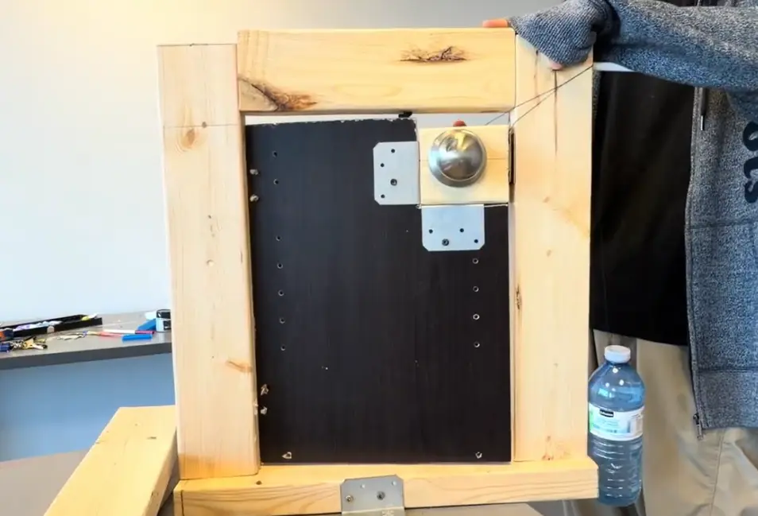
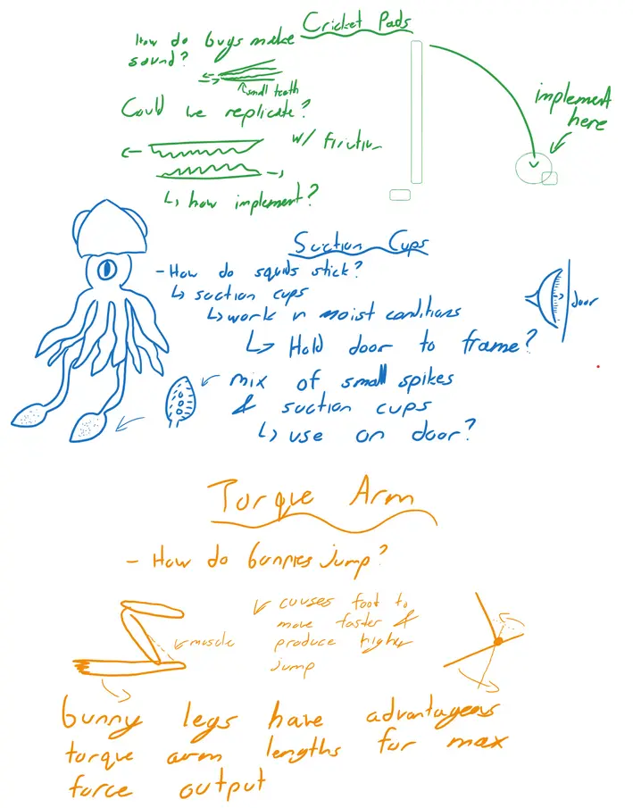
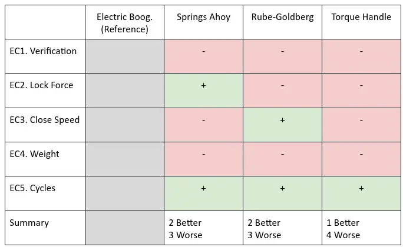

Praxis II Showcase
"The door opens!"
Team Credits: Emma Choi, Ammar Hasham, Luna SongDesign Summary One-Pager
For our Praxis Showcase, we worked on engineering a gate that could fit the needs of our stakeholder, Friend's Daycare. An overview of our design which we presented at showcase can be seen in the poster below:

This project was an excellent representation of the engineering design process, and we covered all threads of framing, diverging, converging, and representing (FDCR) multiple times. This process went through numerous iterations as seen in Figure 1.


CTMF 1: Diverging with Morph Charts, Risks of Cognitive Anchors
The Morph chart is a diverging method, performed by separating the design into several smaller components and proposing design solutions for each component, then combining them to produce full design concepts. [1]
After rescoping our opportunity and refining our NGOs, we wanted to diverge and cover our solution space. For this, we used a Morph chart. Our design fundamentally lent itself to modularity. We split our design into subsystems (auto-closing, locking, alert, and closed-state indication), making diverging with the morph chart a great match. A visualization of our morph chart is shown below.

Prior to showcase, my team reflected on our usages of different diverging elements. To us, the morph chart was particularly interesting:
Takeaways
While the morph chart provided a fast way to generate concepts, it also left us anchored to a single way of thinking. For example, later on when we questioned the need for some of these systems (such as the audio system) or considered adding a new component (a device for supervisors), this did not fit cleanly into our existing concepts which caused a lot of friction. While the morph chart was great for diverging far faster than what may be possible with other tools, it also is important in the future for me to stay wary of cognitive anchors.
CTMF 2: Diverging with Biomimicry
As part of filling out our morph chart, we applied Biomimicry, taking inspiration from nature for our design. We found biomimicry to be helpful in finding new ways to approach design problems. For instance, we were interested in a solution that could hold the door shut.
While it was a bit awkward at first, when we switched to a more structured approach ideas started coming faster. By taking suggestions of a random animals from one team member at a time, then discussing which parts may be useful, this gave our discussion structure and gave fruitful results. The results can be seen below.

A key challenge was producing a reliable, passive audible alert without electrical power. We looked to crickets, which generate sound through stridulation: rubbing textured surfaces together to produce a consistent tonal frequency. This directly inspired the "cricket pad" friction design you can see in our poster. The torque arm idea inspired by rabbits was also helpful in modulating the force applied to the door to keep it within safe limits for children.
Takeaways
In summary, biomimicry can be quite a useful tool but also intimidating. Intimidating because there is so much you can think about in nature, but useful because the ideas are typically not something you'd usually think of, yet also effective!
CTMF 3: Converging with Pugh Charts, synergizing with SCAMPER
The Pugh chart is a converging method formed by comparing designs to one ground design at a time across a variety of contexts (for instance, evaluation criterion). [1]
Following diverging with the morph chart and biomimicry stages, our team required a way to converge through evidence-based reasoning. As we had already established our evaluation criteria during framing, we used them to perform a qualitative analysis on the relative effectiveness of each design. While at the time we did not have physical prototypes, the Pugh chart was relatively forgiving with this, and napkin math was sufficient for its boolean (worse, equal, better) results.

Takeaways
The Pugh chart was helpful for us in this project for 2 reasons. Firstly, it removed 2 designs from consideration (due to lacking in the places we deemed most important using Pairwise Comparisons). Secondly, it lent itself very well to diverging immediately after. Having a great idea of which category each design was good in allowed us to combine designs together that worked well together.
This was, however, in part enabled by the modular nature of our design (which also had its downsides as previously covered). However, the Pugh chart served as an excellent framework to remove designs in maybe the second or third stage of converging, following converging through requirements, but before measurement matrices for which we require more data.
CTMF 4: Reframing to Rescope
The first thing we did when we started engaging with this RFP was reframing the opportunity. The original RFP focused a lot on the durability of the gate. To us, we found child safety as a underhighlighted part of the original team's framing. We were worried that if a door were to automatically close, it could cause physical harm. As a personal experience, my finger was cut off by a door when I was younger. This connected me with the RFP, and reframing it helped me become more invested in the project.
In terms of utility, reframing the project also let us rescope. Since we added a new goal regarding child safety, this was followed by numerous requirements. This decreased our design space, which was helpful when diverging.
Takeaways
Reframing was a underrated step in the process to me. Our decision to focus more on child-safety as a team differentiated us from other people addressing the same RFP. The decreased design space was also especially helpful when we were considering things such as auto-close mechanisms. In the future, it would be useful to consider reframing even more, and as a part of the iterative process.Effect on my Position
As what I would describe as my third 'official' engineering design project, it had a large impact on how I approach engineering design. Showcase was the first time that my team and I pursued all strands of FDCR in large amounts and iteratively. This allowed me to appreciate the strength that CTMFs can have when used together, which is reflected a lot in the reflection above (e.g. synergy between framing, converging, and diverging CTMFs).
I feel this project, in terms of my personal intellectual development, is also what pushed me into relativism. Throughout our processes, we used a large amount of evidence-based methods (see Figure 1) to arrive at a final solution which was satisfactory to all members of our team. This felt noticeably different from my previous projects which you will read about next.
References
[1] Lofgreen, J., & Carrick, R. (2026). ESC102 Lecture Slides.